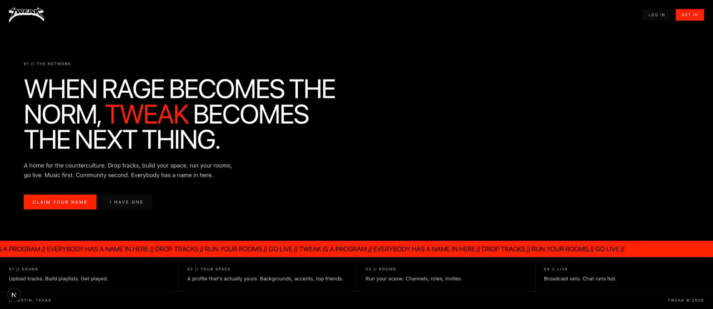

The build, as it runs.



A home for the counterculture. Drop tracks, build your space, run your rooms, go live. Music first. Community second. Everybody has a name in here.
Track uploads, artwork, genre doors, persistent player with waveforms, likes & reposts.
MySpace-style profiles: accents, backgrounds, drag-and-drop sections, featured track, top friends.
Discord-style communities: channels, roles, private rooms with approval, live chat.
Twitch-inspired live status and live-now rail. Broadcast pipe is the next milestone.
